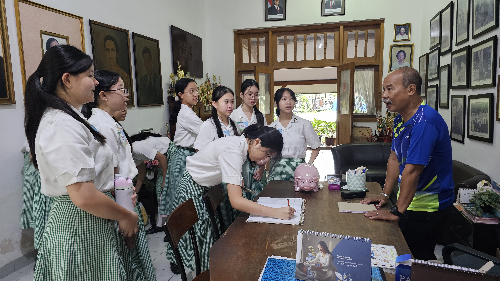
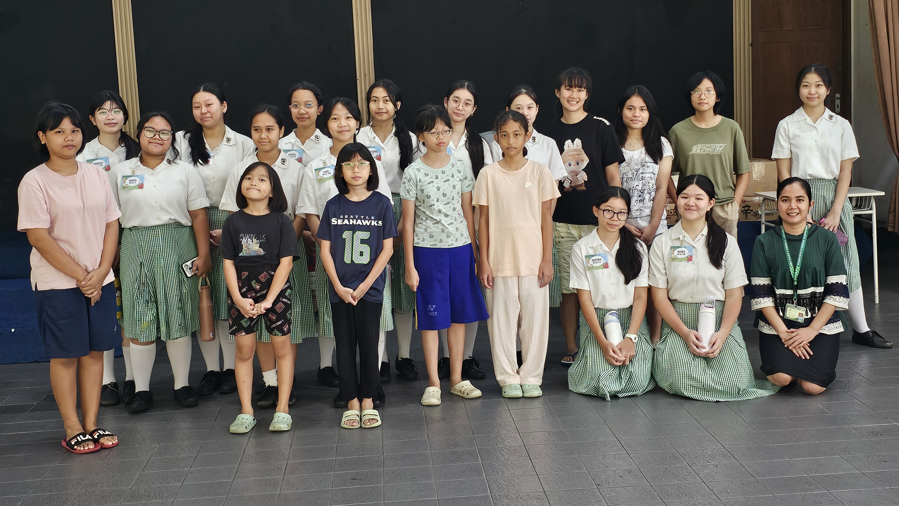
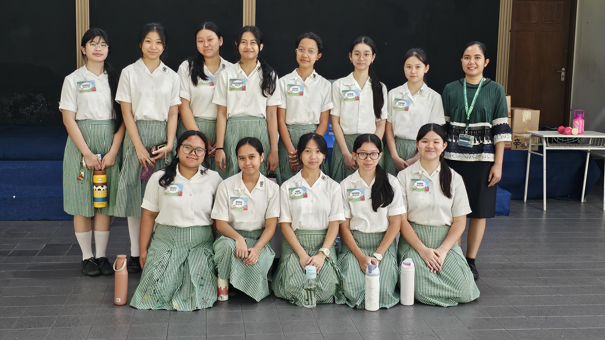

Menurut KBBI, cita-cita adalah keinginan, kehendak, atau tujuan yang ingin diwujudkan dalam hidup kami masing-masing. Tentunya, cita-cita setiap orang berbeda sesuai ‘passion’ dan lingkungan hidup setiap individu, juga dengan bakat dan talenta yang sudah diberikan Tuhan. Oleh karena itu, cita-cita sangatlah penting karena merupakan tujuan dan motivasi kami untuk terus berjuang agar dapat mencapainya. Di saat yang sama, cita-cita juga merupakan cara Tuhan mengutus kita sebagai pribadi untuk melakukan kebaikan di dunia ini dan masyarakat. Contohnya adalah cita-cita sebagai guru yang membantu mendidik generasi muda bangsa, dokter yang membantu menyembuhkan orang sakit, influencer yang menghibur orang-orang di media sosial, dan lain-lain, semua merupakan peran kita dalam membantu masyarakat sekaligus menghidupi kita. Cita-cita ini bekerja sebagai semangat dan keinginan untuk meraih impian ini menjadi ambisi dan motivasi kita untuk bekerja keras, belajar giat, rajin berdoa, dan mencapai hal-hal besar. Cita-cita berfungsi sebagai pedoman dan tujuan kami.
1. Rajin dan disiplin dalam mempersiapkan segala sesuatu. Contohnya dalam bazaar adalah dengan menyusun rencana dan laporan secara jelas, mempersiapkan kebutuhan bazaar, dan bersikap konsisten dalam setiap tahap persiapan.
2. Aktif merencanakan dan membuat timeline yang jelas. Kita dapat melakukan ini dengan membuat jadwal dan persiapan dari jauh hari, membuat to-do list atau catatan rapi untuk memudahkan proses kedepannya.
3. Bertanggung jawab dalam setiap tugas. Kita harus melaksanakan tugas dengan sungguh-sungguh dan penuh integritas dalam setiap waktu, salah satu contohnya adalah dengan menyelesaikan pekerjaan tepat waktu.
4. Adaptif dan kreatif dalam menghadapi tantangan. Jalan mencapai cita-cita tidak akan mudah. Namun, kita harus terus mencari solusi jika ada kendala, dan tidak boleh kaku. Contohnya saat kami kekurangan stok atau memiliki modal yang terlalu tinggi, serta beradaptasi dan memikirkan ide-ide kreatif untuk menyelesaikan masalah.
5. Aktif bekerja sama dan berkomunikasi dengan tim. Dalam situasi apapun, termasuk kesulitan dan keuntungan, kita harus tetap saling menyayangi dan mendukung sebagai teman dan satu tim dengan berdiskusi dan membagi tugas secara rata agar pelaksanaan bazar dan penampilan berjalan lancar. Ini juga mengajarkan kita untuk menerima dan memberi kritik dengan baik, sopan, dan konstruktif.
6. Menyeimbangkan semua kerja keras dengan amal baik. Seperti saat bazaar, kami memberi sebagian keuntungan pribadi untuk charity, kita harus selalu mengingat Tuhan dan masyarakat. Kita tidak boleh meninggalkan Tuhan dan menjadi rakus, karena bakat kami sebenarnya diberikan oleh Tuhan sendiri.
★ Untuk bisa mencapai cita-cita, kami juga membutuhkan perencanaan yang matang. Nilai tentang pentingnya perencanaan ini juga merupakan salah satu kandungan dan ajaran dari Kitab Suci, terutama seperti dari tiga ayat berikut. Pertama merupakan pada Kitab Amsal 21:5 yaitu "Rancangan orang rajin semata-mata mendatangkan kelimpahan, tetapi setiap orang yang tergesa-gesa hanya mengalami kekurangan." Ayat ini mengajarkan bahwa kami sebagai umat Kristiani seharusnya bisa menjadi seperti orang rajin yang memiliki rancangan matang untuk mendapatkan kelimpahan, dan usaha yang dilakukan dengan tergesa-gesa tanpa rancangan yang matang atau kerja keras tidak akan mencapai keinginannya dan akan mengalami kekurangan. Ajaran ini kami juga lakukan selama kegiatan bazar melalui perencanaan matang pada pembuatan dekorasi buat booth kami sehingga akhirnya kami menjadi salah satu kelompok yang menyelesaikan dekorasi paling cepat sekaligus dengan hasil yang sangat memuaskan.
★ Ayat kedua ada di Injil Lukas 14:28 yaitu "Sebab siapakah di antara kamu yang kalau mau mendirikan sebuah menara tidak duduk dahulu membuat anggaran biayanya, kalau-kalau cukup uangnya untuk menyelesaikan pekerjaan itu?" Ayat ini merupakan kutipan dari ajaran Yesus yang mengingatkan kami bahwa dalam segala usaha harus ada perhitungan dan rancangan matang untuk menyelesaikannya dengan baik. Ajaran ini sendiri bisa diaplikasi ke berbagai aspek hidup baik dalam Iman maupun dalam mengejar cita-cita. Ajaran ini kami lakukan secara langsung dalam proses IL besar seperti saat kami melakukan perencanaan produk serta dengan cara pembuatan dan kebutuhannya, sehingga akhirnya proses pembuatan produk kami selalu lancar tanpa ada hambatan besar. Selain itu kami seperti dalam perumpamaan Yesus telah merencanakan keuangan kami dari awal dengan target keuntungan sehingga akhirnya modal kami tidak terlalu besar dan kami mendapatkan keuntungan.
★ Ayat ketiga dan terakhir ada di Kitab Amsal 16:3 yang menyatakan “Serahkanlah perbuatanmu kepada TUHAN, maka terlaksanalah segala rencanamu." Setiap ayat sudah menekankan pentingnya berencana termasuk ayat ini, tapi bagian ini secara khususnya mengajarkan bahwa dalam membuat rencana kami harus selalu melibatkan Tuhan dan menyerahkannya pada-Nya untuk terjadinya dan terpenuhinya rencana kam, sebab rencana Tuhan selalu merupakan yang terindah. Kami dalam proses ini juga sudah sangat melibatkan Tuhan dan doa dalam setiap perencanaan dan tugas kami. Salah satunya merupakan saat kami menyelesaikan proses pembuatan dekorasi kami semua bersama menulis doa-doa kami untuk bazaar di belakangnya. Salah satu peristiwa atau kejadian yang juga menunjukkan penyerahan proses kepada Tuhan merupakan saat kelompok kami mengalami kendala salah satu bahan kemasan produk kami dikirim telat oleh penjualnya dengan waktu yang sangat mepet sebelum bazaar, akhirnya kami berdoa agar kemasannya bisa hadir tepat waktu untuk kami kirim ke sekolah. Akhirnya doa kami pun terkabul dan hambatan kami bisa diatasi dengan baik.
Kami berperan untuk membantu mereka yang kecil, lemah, miskin, tersingkir dan difabel dengan cara membagikan berkat dan sembako dari hasil keuntungan bazaar kami. Dalam kegiatan ini, kami mengirim 2 anggota perwakilan kelompok untuk menyalurkan bantuan kepada Rumah Hati Suci yang berlokasi di Tanah Abang. Kami menyisihkan keuntungan sebesar Rp 100.000-, sesuai dengan kesepakatan kelas, yang kemudian digunakan untuk membeli kebutuhan pokok berupa minyak goreng sebanyak 2 liter dan gula sebanyak 4 kg. Kegiatan ini memberikan kami banyak pengalaman dan kenangan yang dapat mengajarkan saya untuk merasa syukur atas hasil yang telah kami peroleh dari bazaar. Dengan kunjungan ini, kami mempelajari sejarah yayasan Hati Suci.
Kami mendapatkan penjelasan mengenai latar belakang berdirinya panti, kebiasaan dan tanggung jawab yang dijalankan oleh anak-anak di sana. Seluruh anak di panti merupakan anak perempuan sehingga memberikan banyak kesan kepada kami sebagai siswi Santa Ursula Jakarta. Kami juga mendapat banyak kesempatan untuk berinteraksi, berbicara dan berfoto bersama mereka, sekaligus belajar tentang kehidupan dan pengalaman mereka disana. Salah satu pengalaman paling berkesan kami adalah bertemu dengan seorang anak yang tinggal di panti asuhan sana bernama Angel. Angel dulu ditemukan di jalanan di daerah Tangerang karena ditinggalkan orang tuanya. Akhirnya pihak panti membantu dia hingga Angel tinggal di Panti Asuhan dan tumbuh menjadi yang sangat cerdas dan kuat. Kami juga terkesan dengan latar belakang Panti yang dahulu awalnya didirikan untuk membantu anak-anak perempuan yang dijual di perdagangan manusia illegal. Dari ini kami mempelajari untuk menjadi lebih bersyukur melalui menjadi lebih disiplin seperti anak-anak di panti yang diceritakan memiliki kecerdasan dan kerja keras luar biasa hingga bisa mencapai cita-cita seperti menjadi perawat di luar negeri. . Melalui pengalaman ini, kami semua merasa bisa semakin menyadari pentingnya rasa syukur atas apa yang saya miliki dan mendorong kepedulian dan kebersamaan sesama. Kunjungan ini menjadi salah satu kenangan terbesar kami di kelas 9 ini, yang mengajarkan pentingnya kepekaan serta mendorong sesama untuk mewujudkannya melalui tindakan nyata.